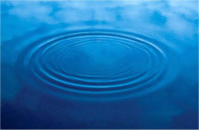
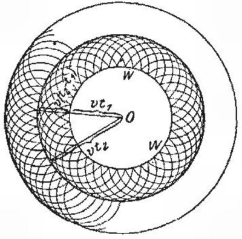
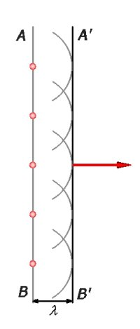
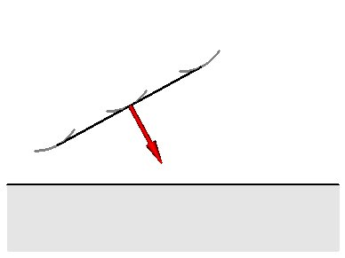
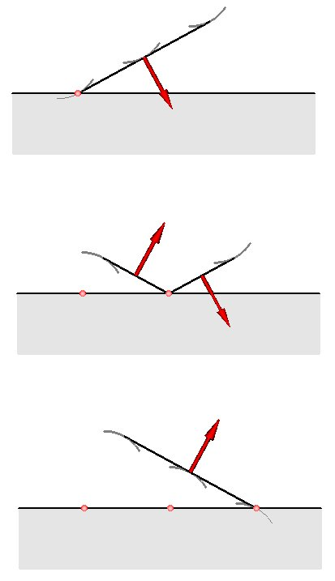
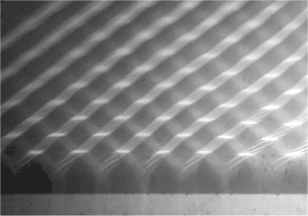

Unde mecanice
C.4. |
|
Principiul lui Huygens |
O perturbaţie provocată într−un punct al suprafeţei apei se propagă în toate direcţiile, fronturile de undă fiind cercuri concentrice (cu centrul
în locul perturbaţiei iniţiale) şi a căror rază creşte în timp (figura 1C4−1).
|  |
Fig. 1C4-1. Undele care se propagă pe suprafaţa apei de la o perturbaţie punctiformă.
|
Christian Huygens (cel care a perfecţionat ceasurile) a propus, la mijlocul secolului al XVII−lea, o explicaţie a propagării undelor (figura 1C4−2):
 Principiul lui Huygens: Fiecare punct al frontului unei unde devine o sursă secundară de perturbaţii, de la care se propagă unde secundare, în
toate direcţiile.
Principiul lui Huygens: Fiecare punct al frontului unei unde devine o sursă secundară de perturbaţii, de la care se propagă unde secundare, în
toate direcţiile.
Noul front de undă este înfăşurătoarea (tangenta comună) a fronturilor de undă secundare.
|  |
Fig. 1C4-2. Explicatia propagării undelor, propusă de către Huygens.
|
Folosind principiul lui Huygens, poţi anticipa cu uşurinţă propagarea unei unde într−un mediu multidimensional.
 Provocarea 1C4−1
Provocarea 1C4−1
Frontul unei unde este, la un moment dat, un plan.
Cum te aştepţi să fie frontul undei, după încă un ciclu al acesteia?
Într−o reprezentare bidimensională, segmentul AB este intersecţia dintre frontul de undă plan şi suprafaţa desenului (figura 1C4−3).
|  |
Fig. 1C4-3. Propagarea unui front de undă plan.
|
Conform principiului lui Huygens, fiecare punct al frontului de undă AB reprezintă câte o sursă secundară de perturbaţii. De la fiecare dintre
acestea se propagă unde secundare (cercuri în desenul din figura 1C4−3).
După un ciclu, raza fronturilor de undă secundare este egală cu o lungime de undă. Noul front de undă va fi tangenta comună A'B' a acestor fronturi
de undă secundare: un plan aflat la o lungime de undă de precedentul.
Provocarea 1C4−2
Frontul plan al unei unde se îndreaptă către o discontinuitate a mediului, ca în figura 1C4−4.
Încotro te aştepţi să se propage unda după reflexia pe discontinuitate?
|  |
Fig. 1C4-4. Un front plan se îndreaptă către o discontinuitate a mediului.
|
Punctele mediului aflate la graniţa discontinuităţii vor intra, rând pe rând în osiclaţie, pe măsură ce frontul de undă incident ajunge la acestea
(figura 1C4−5).
|  |
Fig. 1C4-5. Reflexia unui front de undă plan. Reprezentările succesive corespund câte unui ciclu al undei.
|
Reflexia se produce simetric faţă de normala la suprafaţa discontinuităţii: direcţia undei incidente şi direcţia undei reflectate sunt simetrice
faţă de normala la suprafaţa discontinuităţii.
Figura 1C4−6 prezintă fotografia undelor pe suprafaţa apei care se reflectă pe o discontinuitate.

Fig. 1C4-6. Unde pe suprafaţa apei, care se reflectă pe o discontinuitate plană.
Şi tu poţi realiza astfel de fotografii, folosind o cuvă cu apă şi un generator de unde! Accesează aceste instrucţiuni
pentru a realiza o cuvă pentru studiul undelor.